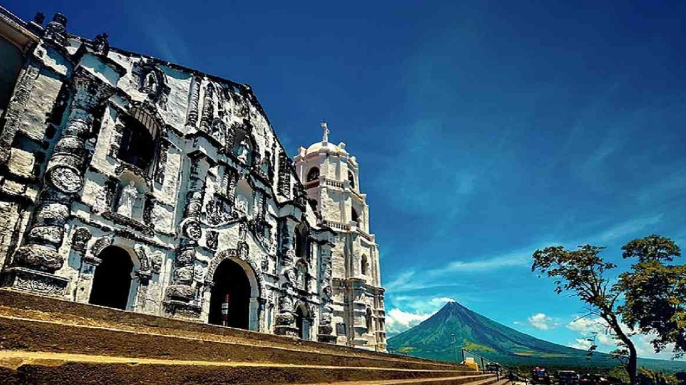

Binurong Point
Casual visitors can enjoy a quick morning
exercise with a glimpse of the beautiful sunrise before starting the day.
1 / 4

2 / 4

Daraga Church
Daraga Church sits on top of a hill overlooking Mount Mayon Volcano and is considered a religious landmark in Legazpi, Albay.
Daraga Church sits on top of a hill overlooking Mount Mayon Volcano and is considered a religious landmark in Legazpi, Albay.
3 / 4
Sumlang Lake
If you're looking to witness 360-degree views of Mayon Volcano without the hassle of tourist crowds, Sumlang Lake is your safest bet
If you're looking to witness 360-degree views of Mayon Volcano without the hassle of tourist crowds, Sumlang Lake is your safest bet
4 / 4

Caramoan
This majestic series of islands in Camarines Norte is home to white-sand beaches and rough seas that serve as a nice little getaway from the busy city.
This majestic series of islands in Camarines Norte is home to white-sand beaches and rough seas that serve as a nice little getaway from the busy city.